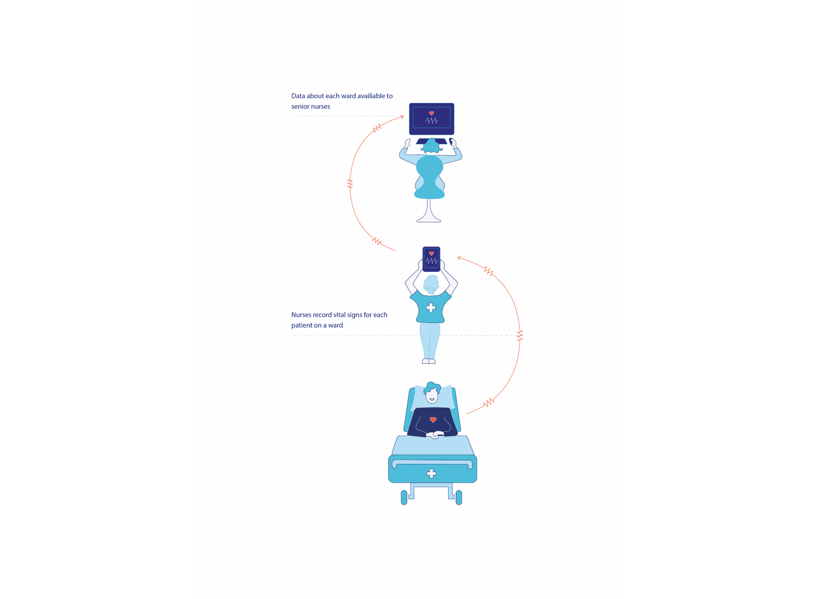
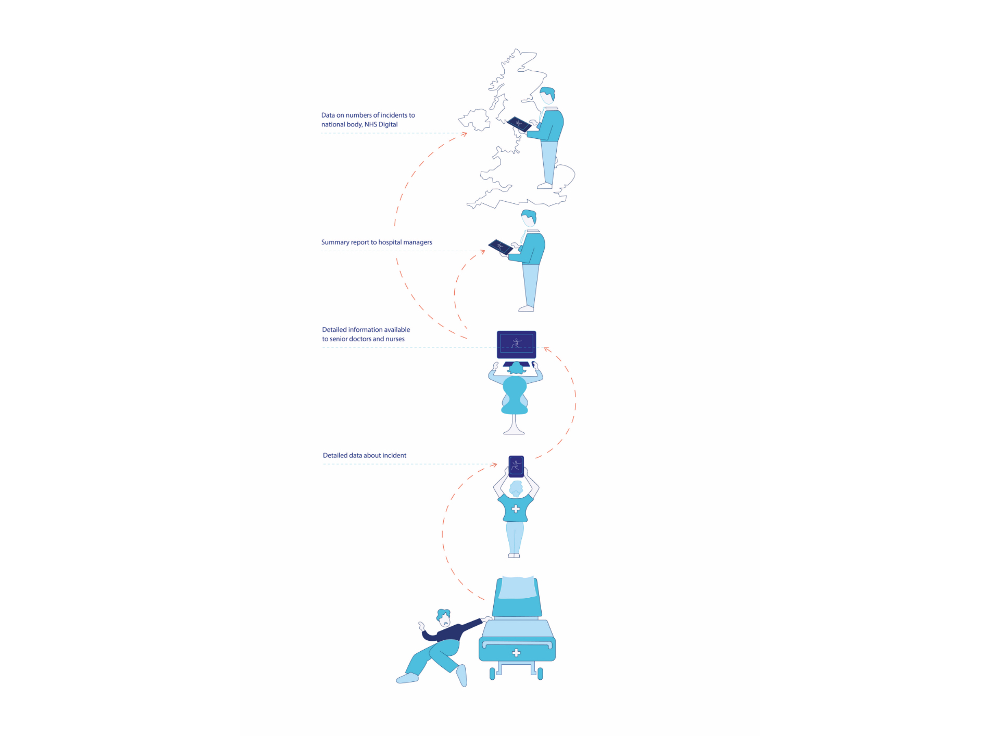

Diagrams For Understanding Patient Data
- Diagrams produced for an article for Wellcome Collection, in collaboration with Understanding Patient Data.
- The diagrams visualise the flow of patient data from hospitals to the national body, NHS Digital.
- See more at: http://bit.ly/2KJdH7b

Diagram showing the flow of patient data within hospitals

Diagram showing the flow of data about incidents from hospitals to NHS Digital